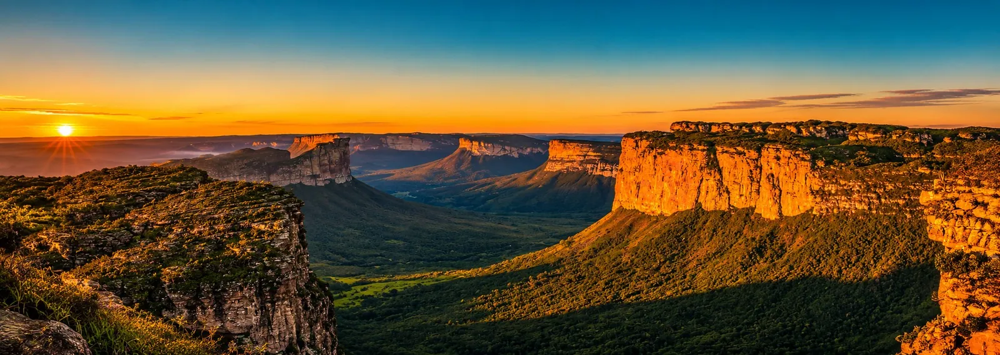
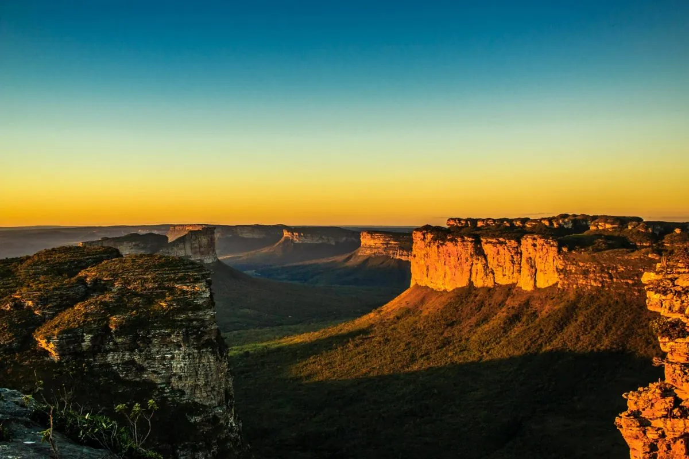

Lençóis
Uma das principais bases da região norte da Chapada. É a porta de entrada da Fazenda Pratinha e do Morro do Pai Inácio.
Ver no mapa
Entre serras, cânions e cachoeiras, descubra uma experiência que vai além do turismo.
Conheça nossos roteiros Encante-se pela Chapada: veja as fotos dos atrativos
Roteiros completos: hospedagem, transporte, refeições e fotos incluídos. Você só precisa chegar.
Wendell Junior, 30 anos, nativo da Chapada Diamantina. Filho de produtores de café e morango, cresceu cercado por serras e cachoeiras. Hoje trabalha com o que mais gosta: mostrar a Chapada para quem chega.
A Chapada é grande, por isso os roteiros se organizam em três cidades-base. Cada uma é a porta de entrada de um grupo de atrativos:
Uma das principais bases da região norte da Chapada. É a porta de entrada da Fazenda Pratinha e do Morro do Pai Inácio.
Ver no mapaCidade histórica e charmosa, na região central. Excelente pra explorar a região e organizar a logística dos roteiros que incluem o Vale do Pati.
Ver no mapaNa região sul ficam a Cachoeira do Buracão e a Cachoeira da Fumacinha: passeios de aventura, com trilhas, cânions e paredões.
Ver no mapaA Chapada Diamantina é uma região enorme, com atrativos espalhados por diferentes cidades. Nem todos os passeios ficam próximos uns dos outros. Para conhecer os principais atrativos, muitas vezes é necessário dividir a hospedagem entre duas ou mais cidades.
Ficar hospedado todos os dias numa cidade só gera deslocamentos longos e você aproveita menos os passeios. Dependendo dos dias e dos atrativos que você quer conhecer, recomendamos dividir a hospedagem entre duas cidades.
Toque em “Ver roteiro completo” pra ver as fotos em carrossel, o que está incluso e os detalhes de cada roteiro.
Toque nos botões e filtre por duração e ritmo:
Nenhum roteiro exato pra essa combinação, mas o Wendell monta um personalizado, sob medida pra você.
Tem um dia livre na Chapada? Escolha um passeio e fale direto com o Wendell. Todos os passeios dividem no cartão:
Esse é um pouquinho de quem esteve com a gente, vivendo experiências incríveis pela Chapada Diamantina!
Tivemos aventureiros que passaram 2 dias conosco, outros que viveram uma experiência de 5 dias. Alguns chegaram sozinhos e foram encaixados em nossos grupos, tiveram a oportunidade de conhecer novas pessoas, fazer amizades e compartilhar momentos que vão levar para a vida toda.
Quem viaja com a Chapada Diamantina Oficial avalia a experiência no Google. É lá que ficam as notas e os relatos de quem já fez os roteiros com o Wendell.
Fez um passeio com a gente? Conte como foi.
Tem sim. A chegada à cachoeira do Buracão inclui uma travessia a nado pelo cânion, feita com colete, e o Wendell acompanha o grupo o tempo todo, com calma e segurança.
Não precisa. Nos roteiros, o transporte da pousada até os passeios está incluso. Você não se preocupa com estrada, estacionamento nem caminho de trilha.
Pode. Parcela em até 6x no cartão de crédito. Chama no WhatsApp que o Wendell monta as condições pra sua data e pro tamanho do seu grupo.
Buscamos sim. Nos roteiros pra quem vem sem carro, a equipe espera por você na rodoviária na chegada, leva até a pousada e, no fim, te deixa na rodoviária de volta.
Conta pro Wendell quantos dias você tem, ele monta o roteiro certo pra você.
Chamar no WhatsApp“Cada roteiro foi pensado em cada um de vocês com carinho e com as melhores experiências.”
Recepção na rodoviária ou busca na pousada, com as bagagens deixadas na hospedagem. O primeiro passeio depende do horário de chegada: Opção 1, Gruta da Pratinha, de águas cristalinas, passeio tranquilo e sem trilha. Opção 2, Morro do Pai Inácio, com caminhada de aprox. 15 min, vista panorâmica e pôr do sol.
Dia de banho na Cachoeira do Mosquito, cercada por paredões rochosos, e no Poço do Diabo, de águas escuras. Ao final dos passeios, retorno a Lençóis.
Flutuação nas águas cristalinas do Poço Azul e visita ao Poço Encantado, uma das paisagens subterrâneas mais impressionantes da Chapada. Lá o passeio é contemplativo, sem banho. Depois, seguimos viagem para a região de Mucugê.
Três dias de caminhada, com aprox. 38 km no total, entre paisagens, cachoeiras e mirantes de um dos trekkings mais impressionantes do Brasil. Pernoites nas casas dos moradores nativos, contato com a cultura local e três dias sem sinal de celular. As bagagens que não são necessárias no trekking ficam no veículo, conforme combinado.
Um cenário espetacular: cânion estreito e paredões gigantescos. Trilha de aprox. 3 km, travessia pelo cânion e banho conforme as condições de segurança.
Para fechar a viagem, uma das cachoeiras mais selvagens da Chapada: 18 km no total (9 km de ida e 9 km de volta), nível difícil, por terrenos irregulares e travessias. Desafiadora e recompensadora.
Observação importante: o roteiro pode sofrer ajustes conforme as condições climáticas, o horário de chegada, as condições das trilhas e a segurança dos atrativos. A visita à Fumacinha exige atenção especial às condições dos rios e à previsão do tempo.
Chapada Diamantina Oficial, conheça a Chapada com quem vive aqui!
Você só precisa chegar. Do resto, a gente cuida:
A equipe espera por você na rodoviária na chegada e te deixa lá no retorno. Todo o transporte do roteiro está incluso.
O pagamento pode ser parcelado em até 6x no cartão de crédito, é só combinar as condições no WhatsApp.
Parcela em até 6x no cartão. Chama o Wendell no WhatsApp pra fechar a sua data e tirar qualquer dúvida sobre o roteiro.
Consultar valoresUm dos trekkings mais impressionantes do Brasil, no formato Circuito: entra e volta pela Vila do Guiné, em três dias entre montanhas, rios, cachoeiras e grutas, dormindo nas casas dos moradores nativos e longe do sinal de celular.
São três dias de caminhada em meio a montanhas, rios, cachoeiras, grutas e paisagens de tirar o fôlego, conhecendo a comunidade local e vivendo uma experiência de conexão com a natureza, longe da correria da cidade.
Começamos pela Vila do Guiné, um dos principais acessos ao vale. Subida da Serra dos Aleixos, travessia pelos Gerais do Rio Preto, contemplação das paisagens e dos grandes paredões e visita aos mirantes do Cachoeirão por cima, com paradas para fotografias. Ao final do dia, chegada à primeira casa de apoio: noite de descanso e contato com a hospitalidade dos moradores nativos.
O dia é da Gruta do Castelo, uma passagem natural por dentro da montanha, com mirantes do vale pelo caminho. Também é dia de conhecer as cachoeiras do Rio Pati, conforme as condições. No fim do dia, retorno à casa de apoio para jantar e descansar.
Após o café da manhã, o Cachoeirão por cima: um paredão rochoso com aprox. 280 metros de altura. Caminhada pelos campos e gerais do vale, com contemplação das paredes do cânion e, principalmente após períodos de chuva, de diversas quedas d'água pelo caminho. Paradas para fotografias e lanche, e retorno pela trilha até a Vila do Guiné.
Você só precisa chegar. Do resto, a gente cuida:
São aprox. 38 km em três dias, com subidas e descidas todos os dias. Preparo físico ajuda, e o Wendell ajusta o ritmo ao grupo.
Hospedagem simples e acolhedora: cama, comida caseira e a hospitalidade de quem vive no Pati o ano inteiro, com contato direto com a cultura local.
Parcela em até 6x no cartão. Chama o Wendell no WhatsApp pra fechar a sua data e tirar qualquer dúvida sobre o circuito.
Quero esse roteiroQuer atravessar o vale inteiro, sem voltar pelo mesmo caminho? Conheça a Travessia de 5 dias, do Guiné a Andaraí.
Ver outros roteirosA Travessia do Pati: do Guiné a Andaraí, atravessando o Vale de uma ponta a outra, sem voltar pelo mesmo caminho, com quatro noites nas casas dos moradores nativos.
Saída do povoado do Guiné, subida pela Serra dos Aleixos e travessia pelos Gerais do Rio Preto. Passagem pelo Mirante da Rampa e descida para o interior do Pati, com possibilidade de cachoeiras do Rio Pati conforme o horário e as condições. Primeira noite em casa de apoio, com jantar e descanso.
O dia é do Cachoeirão por cima, um cânion com paredões de aprox. 280 m. Caminhada pelos campos e gerais, mirantes do Cachoeirão e, especialmente no período de chuvas, diversas quedas d'água pelo caminho, com paradas para fotos e lanche. Segunda noite em hospedagem dentro do Vale.
Subida desafiadora ao Morro do Castelo, com trechos íngremes e passagens entre pedras, e travessia pela Gruta do Castelo. No topo, mirantes com vista de 360 graus do vale. No retorno, possibilidade de banho no Rio Pati. Terceira noite em casa de apoio.
Um dia mais tranquilo, na região menos movimentada do vale. Caminhada pelo interior do Pati, visita ao Poço da Árvore, banhos nas piscinas naturais e contato com a comunidade local. Quarta noite no Vale.
A travessia termina pela histórica Ladeira do Império, antigo caminho de tropeiros e moradores, entre caminhos de pedra e as paisagens da Serra do Sincorá. Mirantes com vista para Andaraí e descida até a cidade, onde a travessia se encerra.
A composição do pacote desta travessia é confirmada na contratação. Chama no WhatsApp que o Wendell passa tudo o que está incluído, conforme a sua data e o seu grupo.
Parcela em até 6x no cartão. Chama o Wendell no WhatsApp pra fechar a sua data e tirar qualquer dúvida sobre a travessia.
Quero esse roteiroTem menos tempo? Veja o Circuito do Pati de 3 dias, com entrada e retorno pelo Guiné.
Ver outros roteirosOs clássicos da Chapada em quatro dias: começa em Lençóis, passa pelos poços cristalinos e termina entre as grandes cachoeiras de Ibicoara.
Recepção na rodoviária ou no aeroporto de Lençóis, conforme o seu meio de transporte. O primeiro passeio depende do horário de chegada: Gruta da Pratinha, de águas extremamente cristalinas, com banho e contemplação, em passeio tranquilo e sem trilha longa; e Morro do Pai Inácio, com caminhada curta de aprox. 15 min até o topo, vista panorâmica e pôr do sol, se as condições permitirem.
Viagem em direção ao sul da Chapada. No Poço Azul, flutuação em águas cristalinas com os equipamentos apropriados, em um cenário subterrâneo impressionante. No Poço Encantado, um lago subterrâneo com efeito de iluminação natural: a visita é contemplativa, sem banho. Após os passeios, seguimos para Ibicoara, onde ficamos hospedados.
Um dos dias mais desafiadores do roteiro: 18 km no total (9 km de ida e 9 km de volta), nível difícil, por terrenos irregulares, pedras e travessias naturais, até uma das cachoeiras mais selvagens e imponentes da Chapada.
Uma queda monumental entre paredões e cânion: trilha de aprox. 3 km, contato com a vegetação nativa, travessia pelo cânion e possibilidade de banho conforme as condições de segurança. O roteiro se encerra em Ibicoara e, conforme o horário combinado, organizamos o seu deslocamento de Ibicoara até Salvador.
Observação: é um roteiro intenso. O passeio do primeiro dia depende do horário de chegada, e a saída de Ibicoara para Salvador precisa ser planejada considerando o tempo de deslocamento. Em caso de chuva forte, as atividades podem ser alteradas por segurança.
Você só precisa chegar. Do resto, a gente cuida:
Parcela em até 6x no cartão. Chama o Wendell no WhatsApp pra fechar a sua data e tirar qualquer dúvida sobre o roteiro.
Consultar valoresVocê só precisa chegar. Do resto, a gente cuida:
A equipe espera por você na rodoviária na chegada e te deixa lá no retorno. Todo o transporte do roteiro está incluso.
O pagamento pode ser parcelado em até 6x no cartão de crédito, é só combinar as condições no WhatsApp.
O valor varia com a data e o tamanho do grupo. Chama o Wendell que ele passa o valor certinho do seu roteiro e as condições de parcelamento no cartão.
Consultar valoresOs poços de água cristalina mais famosos da Chapada combinados com as duas grandes cachoeiras do sul, com hospedagem em Ibicoara durante todo o roteiro.
Começamos pelo Poço Encantado: um lago subterrâneo de águas extremamente cristalinas, com contemplação das águas azuladas, visita à caverna e o fenômeno de iluminação natural, quando as condições permitem. Lá não é permitido banho. Depois, o Poço Azul, com flutuação em águas cristalinas usando os equipamentos apropriados, dentro de uma gruta natural. Ao final do dia, seguimos para a hospedagem em Ibicoara.
Dia da Fumacinha, uma das cachoeiras mais selvagens da Chapada: 18 km no total (9 km de ida e 9 km de volta), nível difícil, por pedras, terrenos irregulares e travessias de rios. No fim do dia, retorno à hospedagem em Ibicoara.
Fechamos com o Buracão: caminhada de aprox. 6 km no percurso total, passando pela Cachoeira das Orquídeas e pelo Recanto Verde, conforme as condições e o percurso. Travessia pelo cânion, contemplação e possibilidade de banho com equipamentos de segurança e o acompanhamento do guia. Retorno a Ibicoara.
O valor varia com a data e o tamanho do grupo. Chama o Wendell que ele passa o valor certinho do seu roteiro e as condições de parcelamento no cartão.
Consultar valoresDois dias dedicados às duas cachoeiras mais impressionantes do sul da Chapada, com uma noite de hospedagem em Ibicoara.
O Buracão fica no Parque Natural Municipal do Espalhado. No caminho, passamos pela Cachoeira do Recanto Verde, pela Cachoeira das Orquídeas e por mirantes naturais, até o cânion e a grande queda. São aprox. 6 km no percurso total, dificuldade moderada, com travessia aquática pelo cânion usando colete salva-vidas. Após o passeio, retorno a Ibicoara para hospedagem, jantar e descanso.
Saída cedo pela manhã para a Fumacinha, escondida entre paredões rochosos, dentro de um cânion: 18 km no total (9 km de ida e 9 km de volta), nível difícil, por pedras, leito de rio e terrenos irregulares, com paradas para descanso e contemplação. O roteiro se encerra em Ibicoara.
Você só precisa chegar. Do resto, a gente cuida:
Parcela em até 6x no cartão. Chama o Wendell no WhatsApp pra fechar a sua data e tirar qualquer dúvida sobre o roteiro.
Consultar valoresQuatro dias com base em Lençóis, sem trocar de pousada: os clássicos do norte da Chapada e a imponente Cachoeira da Fumaça, pelo Vale do Capão.
Na Gruta da Pratinha, águas cristalinas de tonalidade azulada para banho e contemplação, com possibilidade de atividades opcionais no atrativo. Depois, o Morro do Pai Inácio: caminhada curta até o topo, vista panorâmica e pôr do sol, se as condições permitirem.
A Cachoeira do Mosquito é uma queda cercada por paredões rochosos, com piscinas naturais para banho. Na sequência, o Poço do Diabo, na região do Rio Mucugezinho, procurado para banho e contemplação. Retorno para Lençóis.
Saída em direção ao Vale do Capão, onde começa a trilha até o mirante da Cachoeira da Fumaça, uma das maiores do Brasil, com aprox. 340 m de altura. São 12 km no total (6 km de ida e 6 km de volta), dificuldade moderada a difícil, com subida inicial íngreme e caminhada pelos Gerais, até a vista da queda e dos paredões no alto. Retorno para Lençóis.
No último dia, o Poço Azul, com flutuação em águas cristalinas, e o Poço Encantado, um lago subterrâneo de transparência impressionante e fenômeno de iluminação natural. Lá a visita é contemplativa, sem banho. Retorno para Lençóis.
Importante: todos os passeios são organizados conforme as condições climáticas e de acesso. A trilha da Fumaça exige bom condicionamento físico, e o dia dos poços envolve um deslocamento rodoviário mais longo, por isso recomendamos a saída cedo.
O valor varia com a data e o tamanho do grupo. Chama o Wendell que ele passa o valor certinho do seu roteiro e as condições de parcelamento no cartão.
Consultar valoresQuatro dias com hospedagem em Mucugê e atendimento personalizado: os poços cristalinos, enoturismo na Vinícola UVVA, o Buracão e o Projeto Sempre-Viva, no seu ritmo.
O primeiro dia é para conhecer a cidade de Mucugê, nossa base no roteiro, e os dois poços mais famosos da Chapada: o Poço Azul, de águas cristalinas, e o Poço Encantado, uma das maiores belezas naturais da região.
Visita à Vinícola UVVA, um empreendimento de alto padrão em meio às paisagens da Chapada. O tour apresenta a produção de vinhos da casa, em uma experiência de enoturismo com possibilidade de degustação.
Dia de aventura no Buracão: trilha em meio à natureza, travessia pelo cânion e banho na grande queda, com todo o acompanhamento da equipe.
Para fechar, o Projeto Sempre-Viva, em Mucugê: trilha leve de aprox. 1 km para conhecer a história e a beleza da Sempre-Viva, a planta símbolo da região. Um momento para relaxar e se refrescar nas águas.
Você só precisa chegar. Do resto, a gente cuida:
O valor varia com a data e o tamanho do grupo. Chama o Wendell que ele passa o valor certinho do seu roteiro e as condições de parcelamento no cartão.
Consultar valoresUm pouquinho do que espera por você: poços de águas cristalinas, cachoeiras entre cânions, mirantes e o Vale do Pati, nas fotos de quem guia por aqui.
Clique na foto para ampliar
Chama o Wendell no WhatsApp, conta quantos dias você tem e ele monta o roteiro certo pra conhecer esses lugares.
Chamar no WhatsAppUma história de amor pela Chapada Diamantina que vem de família.
Minha história com a Chapada Diamantina começou muito antes de eu pensar em trabalhar com turismo. Na verdade, começou com a minha família.
Meus avós nasceram e cresceram nesta região. Eles trabalhavam na roça, plantavam café, melancia e tiravam da terra o sustento da família. Meu avô tinha uma rotina que sempre me chamou a atenção: três vezes por mês, levava animais de Andaraí até Ibicoara. Entre junho e agosto, quando o frio chegava com mais força em Ibicoara, ele fazia o caminho de volta para Andaraí, onde o clima era mais quente.
Cresci ouvindo essas histórias e vivendo de perto a simplicidade da vida no interior. Desde pequeno, estava acostumado a caminhar pela Chapada, conhecer seus caminhos, entrar nas trilhas e observar os animais. Talvez naquela época eu ainda não entendesse, mas a natureza já fazia parte de quem eu era.
Aos 15 anos, comecei a acompanhar alguns visitantes pelas trilhas da região. O turismo ainda estava crescendo, e eu fui descobrindo, aos poucos, que poderia transformar aquilo que tanto gostava em meu trabalho. Gostava de mostrar os lugares, contar histórias e ver a felicidade das pessoas ao conhecerem as belezas da minha terra.
Com o passar dos anos, fui buscando mais conhecimento. Me formei em Biologia, fiz formação como bombeiro civil e procurei me especializar em áreas como primeiros socorros, resgate aquático e segurança. Também desenvolvi um grande interesse pelo estudo dos animais e da fauna silvestre. Sempre tive uma ligação muito forte com eles e gosto de estar em contato com a natureza.
Para mim, ser guia vai muito além de conhecer uma trilha ou saber chegar a uma cachoeira. É entender o ambiente, respeitar a natureza, cuidar das pessoas e estar preparado para os desafios que podem surgir pelo caminho.
Em 2014, fundei a Chapada Diamantina Oficial. No começo, era um projeto movido principalmente pela vontade de divulgar a região onde nasci e cresci. Eu queria que mais pessoas conhecessem as cachoeiras, as montanhas, os rios, as histórias e tudo aquilo que a Chapada tem de especial.
Com muito trabalho, dedicação e amor pelo que faço, esse projeto foi crescendo. Ao longo dos anos, tive a oportunidade de conhecer pessoas de diferentes lugares, acompanhar famílias, casais, grupos de amigos e realizar o sonho de muita gente que sempre quis conhecer a Chapada Diamantina.
E uma coisa que nunca mudou foi a minha maneira de enxergar esse trabalho: cada pessoa que chega merece atenção e respeito.
Gosto de acompanhar os grupos de perto, cuidar dos detalhes e fazer com que todos se sintam bem durante a viagem. Tenho muito orgulho da confiança que construí ao longo desses anos e de uma trajetória que mantenho com muito cuidado e compromisso com a satisfação dos clientes.
Sempre digo que não quero que alguém venha à Chapada apenas para conhecer uma cachoeira e depois ir embora. Quero que viva uma experiência, dê boas risadas, conheça nossa cultura, descubra histórias e volte para casa com lembranças que vai guardar por muitos anos.
Hoje, quando estou conduzindo um grupo por uma trilha, mostrando uma cachoeira ou contando alguma história da região, muitas vezes me lembro dos meus avós e de tudo que vivi durante a infância.
É impossível separar meu trabalho da minha história. A terra que meus avós cultivaram é a mesma que hoje tenho a alegria de apresentar a pessoas de tantos lugares.
Cada trilha tem uma história, cada lugar tem sua beleza e cada visitante que conheço deixa também um pouco de sua história comigo.
Sou Wendell Júnior, nasci e cresci na Chapada Diamantina. Tenho orgulho das minhas raízes, da minha família e de poder trabalhar com aquilo que amo.
Se tem uma coisa que aprendi durante todos esses anos é que uma viagem especial não depende apenas do lugar que você visita, mas também das pessoas que caminham ao seu lado.
Meu desejo é que você conheça a Chapada Diamantina não apenas com os olhos, mas também com o coração.
Será um prazer receber você na minha terra e fazer parte dessa experiência!
Conta pro Wendell quantos dias você tem e o que quer conhecer na Chapada: ele monta o roteiro com você, do seu jeito.
Conversar com o Wendell